VAQSTAR (Virginia Aquarium Sea Turtle Attribute Repository) collects sea turtle stranding and necropsy data for the Virginia Aquarium and Marine Science Center.
VAQSTAR (Virginia Aquarium Sea Turtle Attribute Repository) collects sea turtle stranding and necropsy data for the Virginia Aquarium and Marine Science Center.
VAQSTAR download
VaqStarNet v1.2.5 –> VaqStarNet_setup.exe
Right-click on the link above and choose “Save Target As…” to save the file to your local machine.
You can then double-click on the VaqStarNet_setup.exe file on your local machine to launch the installation package.
NOTE: VaqStar requires the Microsoft® .NET Framework 2.0.
- To determine if your computer currently has the Microsoft® .NET Framework 2.0 installed, go to Start > Settings > Control Panel > Add or Remove Programs and look for a Microsoft® .NET Framework 2.0 entry.
- If you do not see it, you can download it here.
Main Screen:
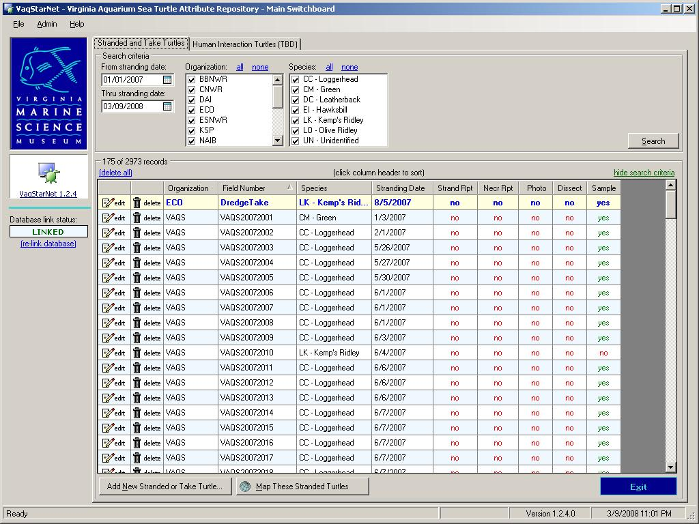
Stranded Turtle Information:
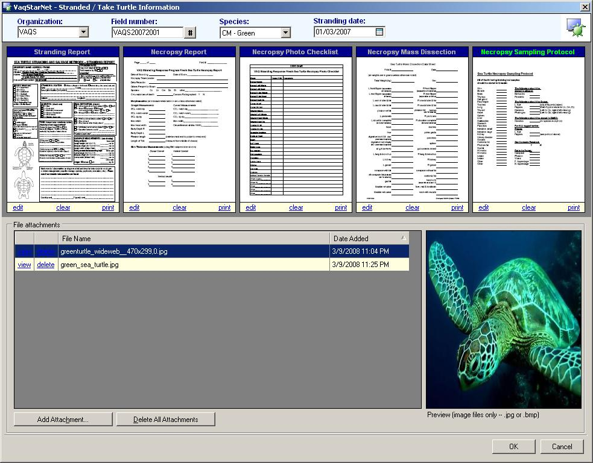
Stranded Turtle List Map Screen:
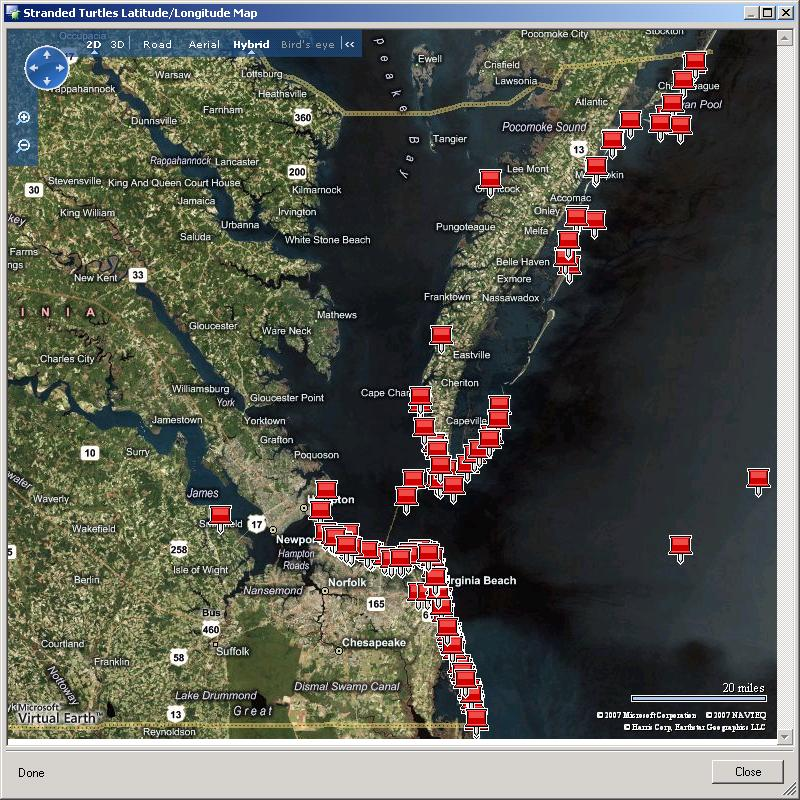
Stranding Report Screen:
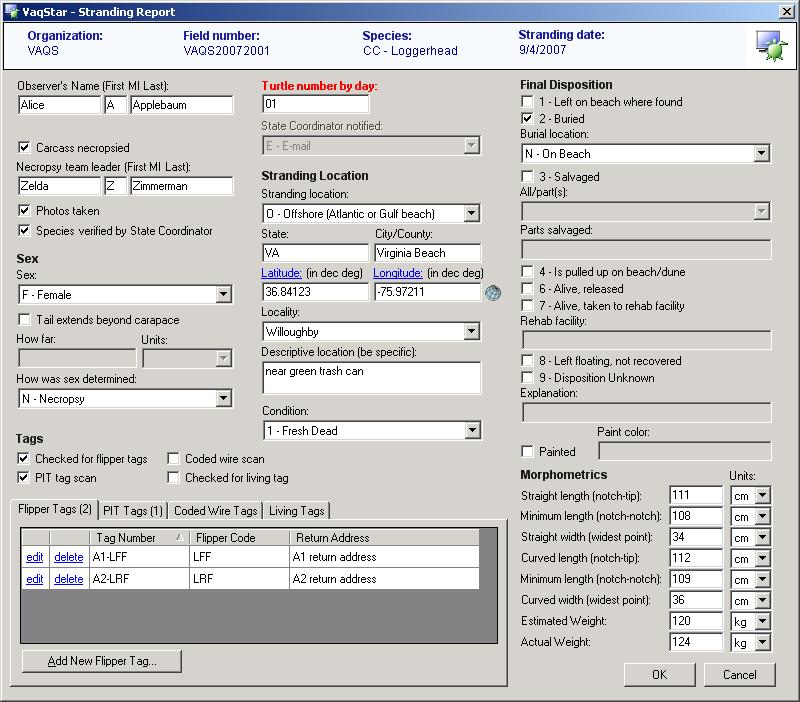
Stranding Report Map Screen:
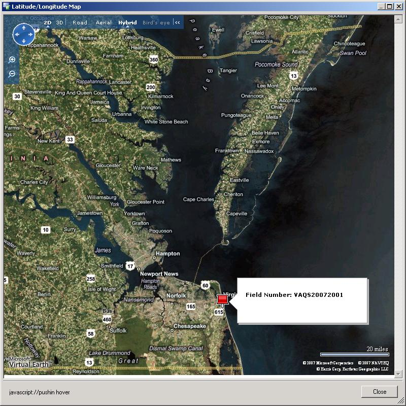
Flipper Tag Screen:
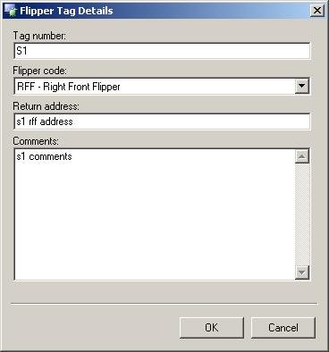
Necropsy Report Screen – Tab 1:
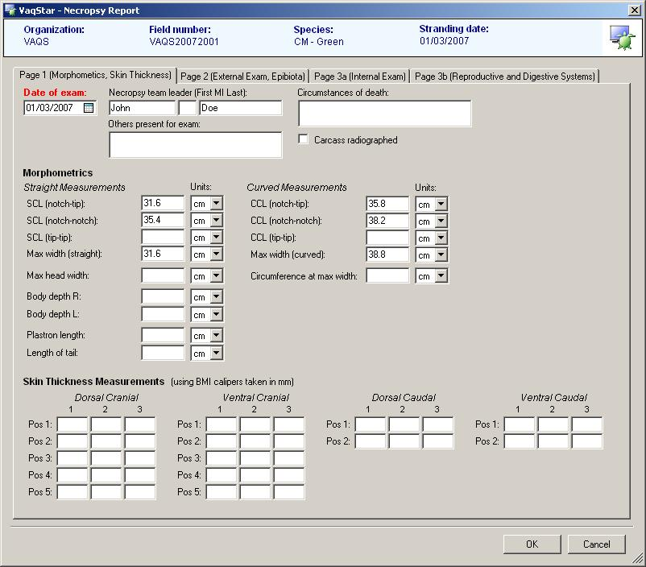
Necropsy Report Screen – Tab 2:
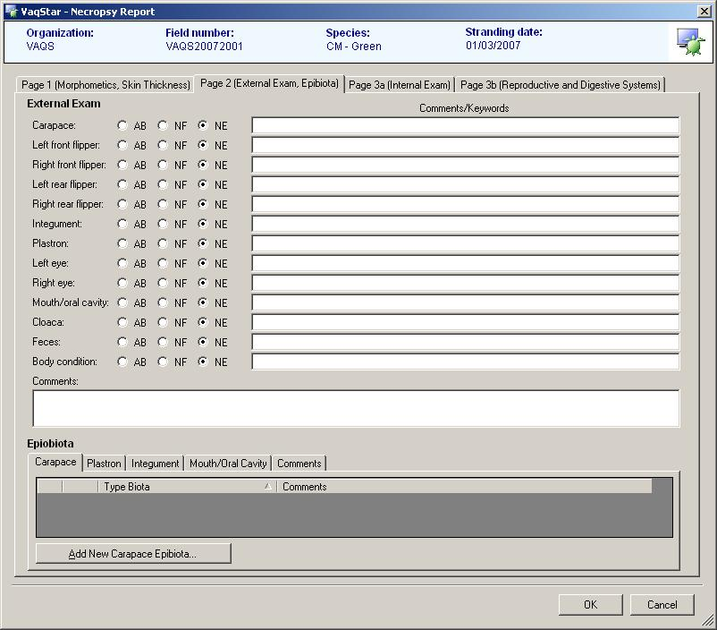
Necropsy Report Screen – Tab 3:
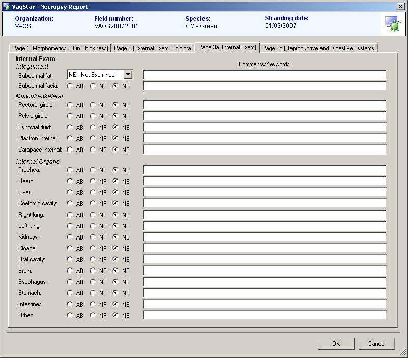
Necropsy Report Screen – Tab 4:
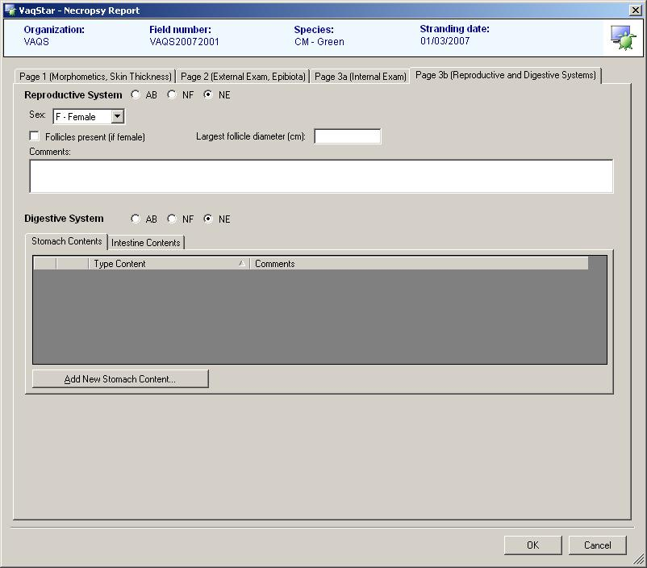
Necropsy Photo Checklist:
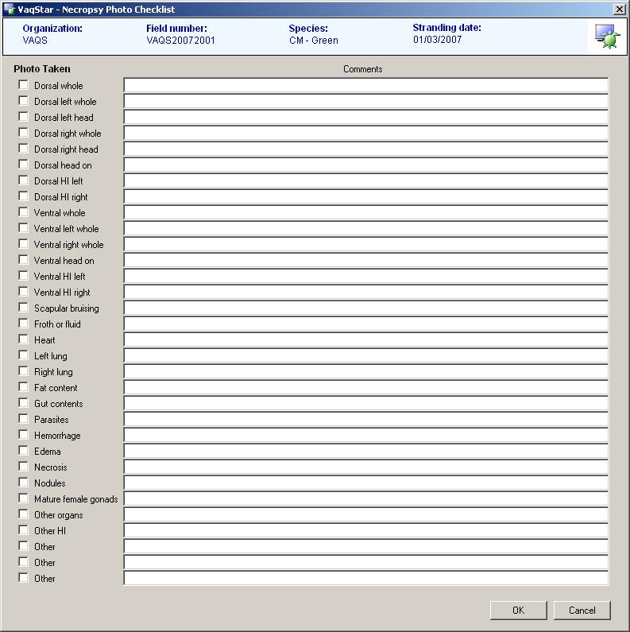
Necropsy Mass Dissection:
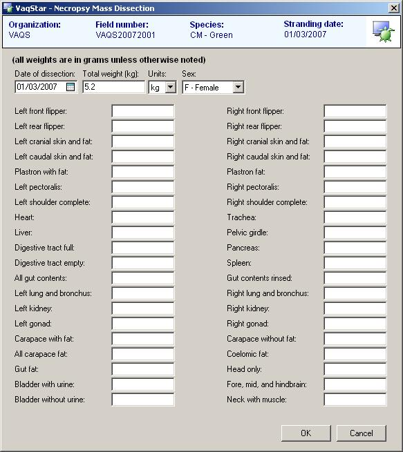
Necropsy Sampling Checklist:
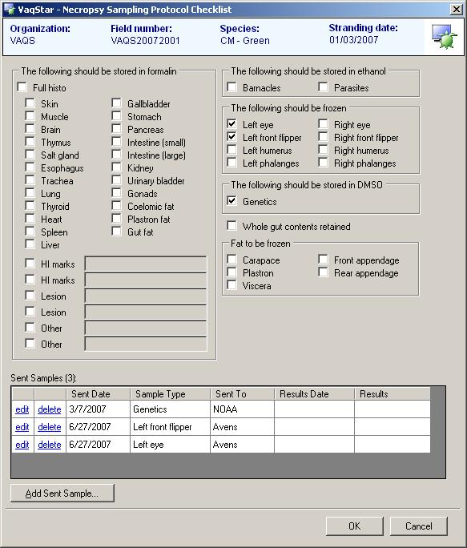